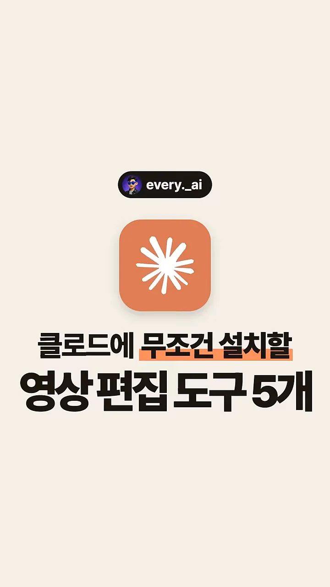
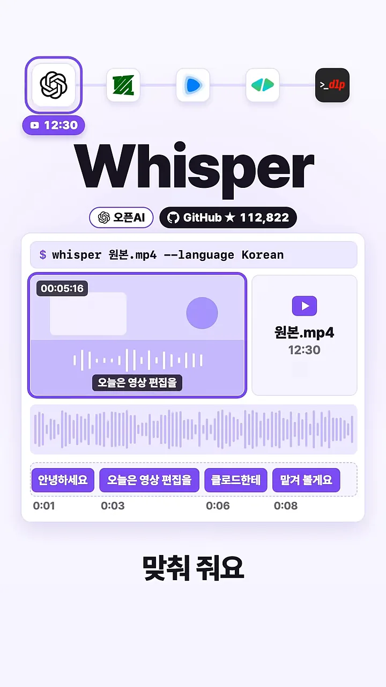
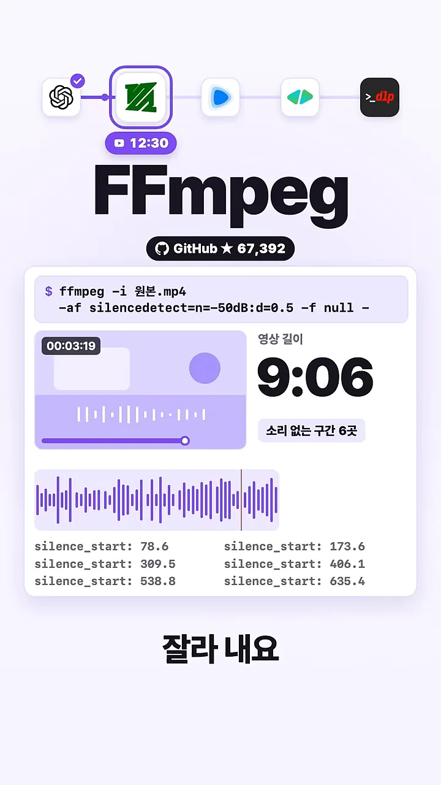
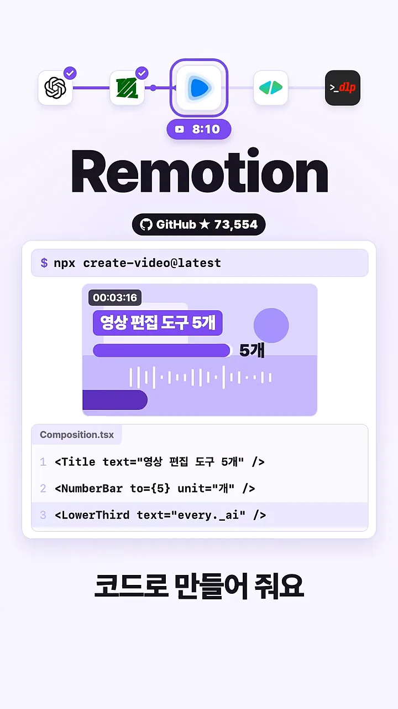
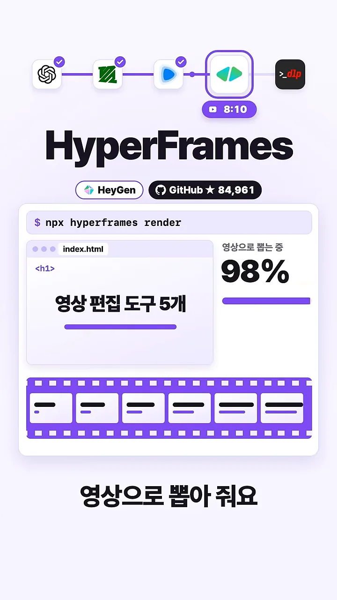
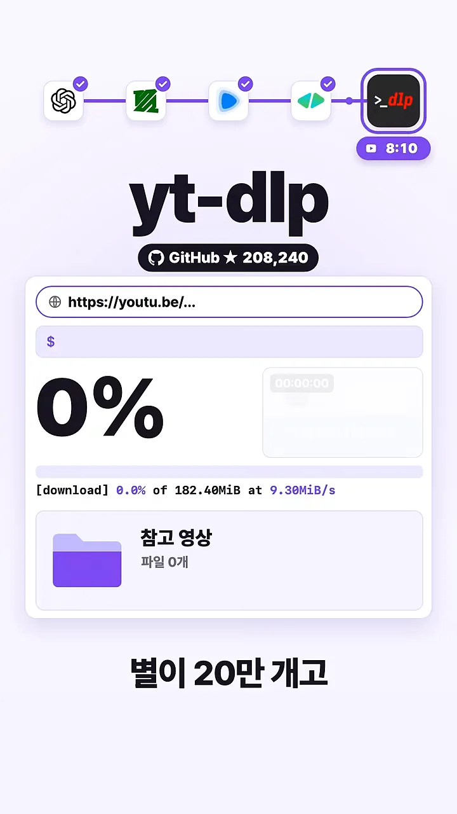
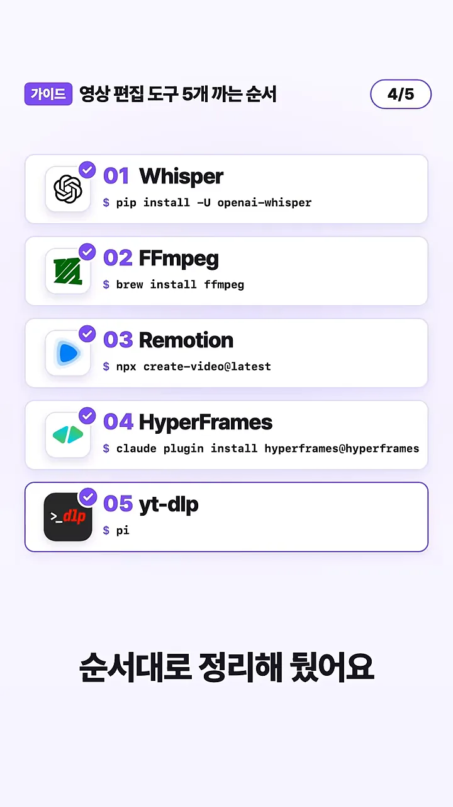

받아쓰고 자르기: Whisper와 FFmpeg
첫 화면은 Claude 로고 아래 '클로드에 무조건 설치할 영상 편집 도구 5개'라는 제목 카드예요. 영상은 이 다섯 개를 깔기 전에는 컷 편집부터 시작하지 말라고 못 박고 시작해요. 사람이 타임라인을 붙잡고 자르기 전에, 반복 작업을 맡길 도구부터 갖추라는 말이에요.

Whisper: 말을 받아써서 자막 시간까지
첫 번째는 OpenAI가 만든 Whisper예요. 음성 인식으로 말한 내용을 받아쓰고, 문장마다 언제 나왔는지 시간까지 붙여 줘요. 아래 화면에서 위쪽 명령이 whisper 원본.mp4 --language Korean이고, 맨 아래 보라색 칸이 받아쓴 자막 조각이에요. '안녕하세요'는 0:01, '오늘은 영상 편집을'은 0:03처럼 시간 눈금 위에 놓여 있어요.

FFmpeg: 말이 끊긴 구간을 한 번에 잘라내기
두 번째는 FFmpeg이에요. 영상은 말이 끊긴 구간을 찾아서 한 번에 전부 잘라낸다고 소개해요. 화면 명령은 silencedetect 필터를 써요. n=-50dB는 이보다 조용하면 무음으로 본다는 기준이고, d=0.5는 0.5초 넘게 이어져야 한다는 뜻이에요. 아래쪽에 찍힌 silence_start: 78.6 같은 줄이 찾은 무음 구간의 시작 시각(초)이에요.

화면을 코드로 만들기: Remotion과 HyperFrames
Remotion: 모션 그래픽을 코드로
세 번째는 Remotion이에요. 영상은 별 7만 개를 넘겼고 모션 그래픽을 코드로 만들어 준다고 해요. 아래 화면 위쪽이 프로젝트를 만드는 npx create-video@latest예요. 맨 아래 Composition.tsx에 세 줄이 적혀 있어요. <Title>은 '영상 편집 도구 5개' 제목 띠, <NumberBar to={5}>는 5개까지 차오르는 막대, <LowerThird>는 아래쪽 이름표예요. 가운데 미리보기에 그 결과가 그려져 있어요.

HyperFrames: 웹 화면을 그대로 영상으로
네 번째는 HeyGen이 공개한 HyperFrames예요. 웹 화면을 그대로 영상으로 뽑아 줘요. 왼쪽 창이 index.html로 만든 '영상 편집 도구 5개' 화면이고, 오른쪽 '영상으로 뽑는 중' 숫자가 npx hyperframes render의 렌더링 진행률이에요. 아래 필름 띠에 프레임이 하나씩 채워져요.

참고 영상 받기와 설치 순서
yt-dlp: 참고 영상을 주소 한 줄로
다섯 번째는 yt-dlp예요. 영상은 별이 20만 개라고 하고, 화면 배지는 208,240개예요. 맨 위 칸에 https://youtu.be/… 주소를 넣고, 아래 [download] 줄에 182.40MiB짜리 파일을 받는 속도가 찍혀요. 받은 파일은 '참고 영상' 폴더로 들어가요.

다섯 개 까는 순서
마지막 화면은 '영상 편집 도구 5개 까는 순서' 가이드예요. 01부터 05까지 도구 이름과 설치 명령이 한 줄씩 붙어 있어요. 다섯 번째 yt-dlp 줄은 아직 입력 중이라 pi까지만 보여요.

화면 속 명령을 표로 옮기면 이래요.
| 순서 | 도구 | 하는 일 | 화면에 나온 설치 명령 |
|---|---|---|---|
| 1 | Whisper | 받아쓰기와 자막 시간 맞추기 | pip install -U openai-whisper |
| 2 | FFmpeg | 무음 구간 찾아 자르기 | brew install ffmpeg |
| 3 | Remotion | 모션 그래픽을 코드로 | npx create-video@latest |
| 4 | HyperFrames | 웹 화면을 영상으로 | claude plugin install hyperframes@hyperframes |
| 5 | yt-dlp | 참고 영상 받기 | (화면에서 잘려 pi까지만 보여요) |